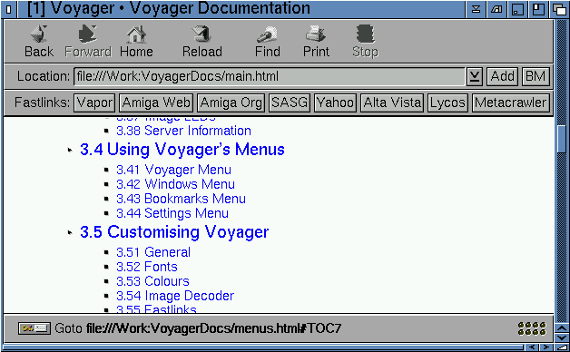
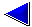
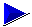
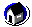
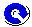
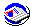
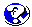
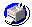
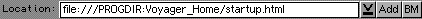

Voyager V3 3.5.2 by Chris Wiles, 1999.
3.3 The Main Interface
Before you start to surf, it is best to spend a few minutes getting used to the Voyager interface
and menu options.

3.31 Voyager Animation
Voyager displays a small animation in the top right hand corner of its
window when it is busy retrieving information from a website. Clicking on this
box will also take you to the About Voyager page.
By holding your right mouse button over the transfer animation, you will see a
small menu. This menu will allow you to turn off the transfer anim, saving vital
pens (on AGA screens) and expanding the size of the Voyager interface).
3.32 Using Voyager's Buttons
Note that when these buttons cannot be used at a particular time,
they turn grey. For instance, if you cannot move 'forward', the forward button
will remain ghosted.
Here is a quick explanation of what each Button does:
 |
The back buttion returns you to the last page Voyager had on screen. Because
some pages are temporary, ie. the result of a Form submission, Voyager will not
return you to such pages, skipping back over them to the previous "real" page. |
|
|  |
The Forward button, like the back button, navigates you through Voyager's history of pages it has accessed in the current session. For
the Forward button to be active, of course, you must have used the Back button at least once. Having done so, you can return yourself to
the most recent page you viewed. |
|
 |
You can find out how to configure Voyager's Home Page in the Customising Voyager section. Pressing
this button will send Voyager to your defined Home Page. |
|
 |
The Reload button forces Voyager to reload the page you are currently looking at. This can be useful for such sites as
CNN, which updates every few minutes. |
|
 |
The Images button only becomes active when "Load HTML Images Directly", in the Settings menu, is turned off. Pressing the button
tells Voyager that you wish to load all images on the page you are currently viewing. You may also load an image individually by clicking
on it when Voyager displays the image's "ALT" tag. |
|
 |
The "Find" function will allow you to search through four major search engines to find the keyword you inserted into the find box.

Just insert the the "keyword" you want to search for into the box and press the search
button.
You will be presented with four framed screens with four search engines offering you a result of your search.
|
|

| The Print button was meant to send the current web page to your printer.
Printing was already listed as missing in the 3.3.126 readme and may not
work in 3.5.2. |
|
|
The Stop button forces Voyager to abort downloading a page and any of that page's images. Loading can be restarted by pressing
the Reload button, if needed.
The Stop button also allows you to stop the downloading of images once they have started. If, for example, you go onto a site which may
interest you, load the images and find that the site does not interest you, you can stop the images (before they are all fully loaded) and
then move on. |
3.33 Location

This gadget shows the current URL Voyager is accessing. When
inactive, it is preceded by "Location:", but when activated,
this changes to "Goto:" to prompt you to type in a URL.
If you do not type http://, Voyager will add it to the front
of the address itself.
If you want to goto an FTP site you must insert FTP://
into the URL box. ie.
ftp://ftp.doc.ic.ac.uk
This is the FTP site which holds the UK Aminet collection.
The URL gadget has two buttons to the right of it. The first is a
pop-up, which displays the entries in Voyager's stack for quick
access. Next to this is a button labelled "ADD". This adds the
current page to Voyager's bookmark list. For more information on
this, see the Bookmark section.
"BM" launches the bookmarks GUI.
3.34 Fastlinks

The group of buttons just above the main display window are
user-configurable Fastlinks. They can be switched on or off by using
the 'Show FastLinks' option in the Settings menu. The Fastlinks can
be edited from the Fastlinks page in Voyager's preferences.
In 3.5.2, default Fastlink Docs opens this HTML manual
(file:///PROGDIR:Docs/voyager3docs/main.html).
3.35 Status Information
This section gives you information about the current status of Voyager. If, for example, you were
trying to go to another web site the information might say "Waiting for response" - ie. Voyager
is waiting for the server to send the data.
An example of some of the text found within the Status Information:

The section also gives you information about links etc. Hold your mouse pointer over a link and
some text will appear within this section.
3.36 Status Bar

This bar presents information whilst the server is sending you the data. For example, you will
see a bar which, when 100%, should mean that the server has sent the web site and now the images
are loading.
If Voyager is trying to get onto a web site, and is finding problems connecting, the status
bar will be busy. This means the bar will look similar to this:

3.37 Image LEDs

These LEDs inform the user of the progress of image loading.
| LED Colour | Meaning of the Colour |
|---|
| Dark Red | Looking up Hostname |
| Red | Connecting to Server |
| Green | Transferring Image Data |
| Light Grey | Connection Parked |
| No Light | Idle |
3.38 Server Information
On the bottom left of Voyager you will see the server status information. The key shows whether you are
connected to a secure on non-secure web site. For example, if the key is broken, the server you are
connected to is "unsecure".
The other image indicates whether the site is HTTP 1.0, 1.1 or FTP server.